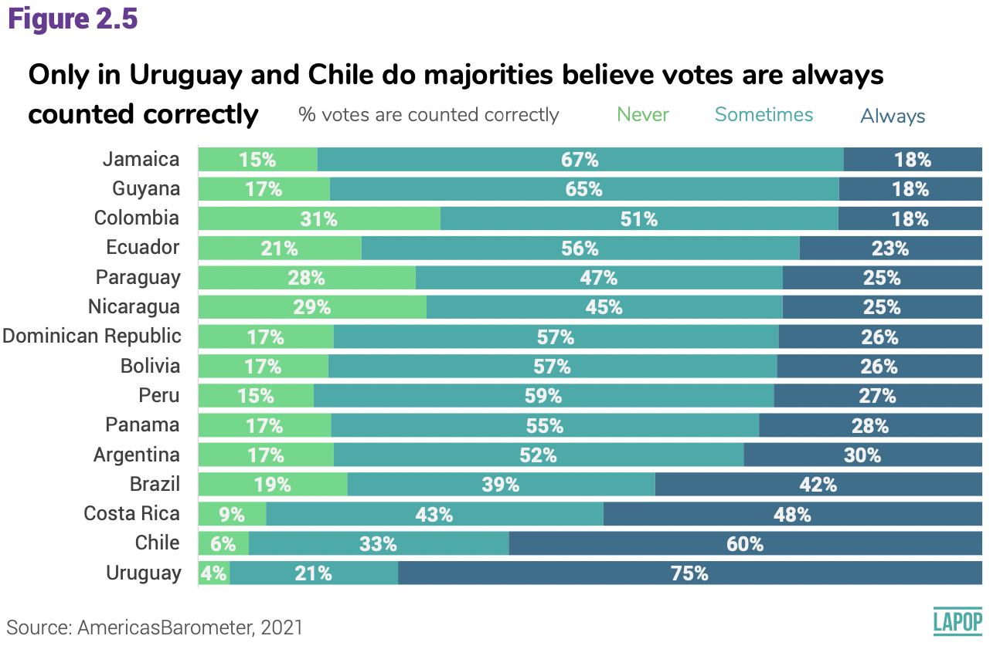
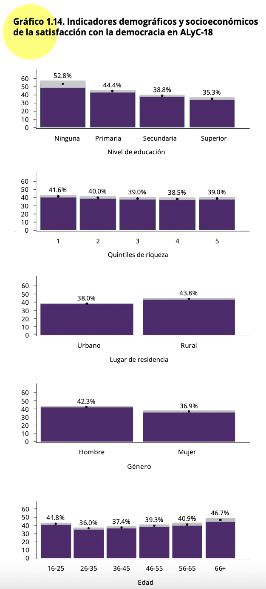
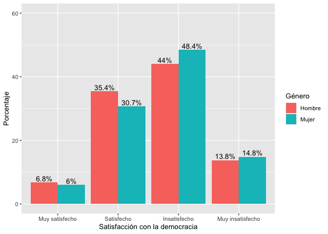
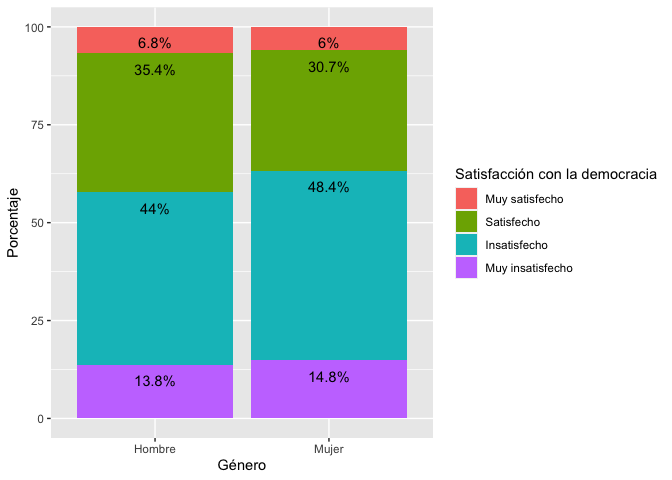
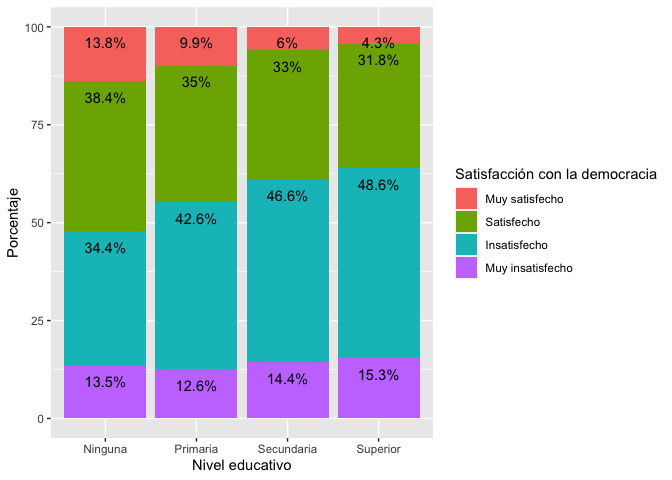

Tablas cruzadas con el Barómetro de las Américas
Introducción
Las secciones anteriores correspondientes a la prueba t y a la prueba de ANOVA tratan sobre la relación de una variable numérica con una variable categórica, de tal manera que el objetivo es comparar y extrapolar las medias de la variable numérica por grupos de la variable categórica.
En esta sección veremos las relaciones bivariadas entre dos variables categóricas (o de factor en la terminología de R). Esta evaluación se hace mediante tablas cruzadas (o de contingencia) y se evalúa mediante la prueba de chi-cuadrado.
Sobre la base de datos
Los datos que vamos a usar deben citarse de la siguiente manera: Fuente: Barómetro de las Américas por el Proyecto de Opinión Pública de América Latina (LAPOP), wwww.LapopSurveys.org. Pueden descargar los datos de manera libre aquí.
En este documento se carga nuevamente una base de datos recortada, originalmente en formato SPSS (.sav). Se recomiendo limpiar el Environment antes de iniciar esta sección.
Esta base de datos se encuentra alojada en el repositorio “materials_edu” de la cuenta de LAPOP en GitHub. Mediante la librería rio y el comando import se puede importar esta base de datos desde este repositorio. Además, se seleccionan los datos de países con códigos menores o iguales a 35, es decir, se elimina las observaciones de Estados Unidos y Canadá.
library(rio)
lapop18 <- import("https://raw.github.com/lapop-central/materials_edu/main/LAPOP_AB_Merge_2018_v1.0.sav")
lapop18 <- subset(lapop18, pais<=35)También cargamos la base de datos de la ronda 2021.
lapop21 = import("lapop21.RData")
lapop21 <- subset(lapop21, pais<=35)Los votos son contados correctamente
El reporte El Pulso de la Democracia de la ronda 2021 del Barómetro de las Américas reporta los resultados de la variable COUNTFAIR1. Los votos son contados correcta y justamente. ¿Diría usted que sucede siempre, algunas veces o nunca? Se reporta el porcentaje de cada categoría por país.
Este gráfico está reportando el cruce entre una variable categórica (o de factor en el lenguaje de R) llamada “countfair” que tiene tres categorías (nunca, algunas veces y siempre) con otra variable categórica llamada “pais” que tiene 15 categorías (cada país mostrado).

Esta variable es importada por R como una de tipo numérica. Para
poder trabajarla en esta sección se tiene que declararla como una
variable de tipo factor usando el comando as.factor y luego
se etiqueta con el comando levels.
library(haven)
lapop21$countfair1r = as.factor(lapop21$countfair1)
levels(lapop21$countfair1r) <- c("Siempre", "Algunas veces", "Nunca")
table(lapop21$countfair1r)##
## Siempre Algunas veces Nunca
## 3477 5235 1698Tabla cruzada de si los votos se cuentan justamente por país
Antes de replicar el gráfico, es útil ver estos resultados en forma
de tabla cruzada. Esta table se puede crear con el comando
table. Sin embargo, en esta tabla tenemos las frecuencias
absolutas. Además, nos muestra que esta pregunta no se realizó en
algunos países.
table(lapop21$pais, lapop21$countfair1r)##
## Siempre Algunas veces Nunca
## 1 0 0 0
## 2 0 0 0
## 3 0 0 0
## 4 0 0 0
## 5 186 351 173
## 6 354 272 51
## 7 215 445 120
## 8 130 362 226
## 9 158 435 143
## 10 169 408 112
## 11 177 430 97
## 12 169 315 168
## 13 428 201 39
## 14 525 111 20
## 15 346 257 116
## 17 216 350 120
## 21 170 406 99
## 22 0 0 0
## 23 122 464 97
## 24 112 428 117Para poder reproducir las frecuencias relativas tenemos que usar el
comando prop.table. Este comando nos brinda por defecto los
porcentajes sobre el total. Lo que queremos calcular en este caso son
los porcentajes por cada fila, es decir, por cada país.
prop.table(table(lapop21$pais, lapop21$countfair1r))##
## Siempre Algunas veces Nunca
## 1 0.000000000 0.000000000 0.000000000
## 2 0.000000000 0.000000000 0.000000000
## 3 0.000000000 0.000000000 0.000000000
## 4 0.000000000 0.000000000 0.000000000
## 5 0.017867435 0.033717579 0.016618636
## 6 0.034005764 0.026128722 0.004899135
## 7 0.020653218 0.042747358 0.011527378
## 8 0.012487992 0.034774256 0.021709894
## 9 0.015177714 0.041786744 0.013736792
## 10 0.016234390 0.039193084 0.010758886
## 11 0.017002882 0.041306436 0.009317963
## 12 0.016234390 0.030259366 0.016138329
## 13 0.041114313 0.019308357 0.003746398
## 14 0.050432277 0.010662824 0.001921230
## 15 0.033237272 0.024687800 0.011143132
## 17 0.020749280 0.033621518 0.011527378
## 21 0.016330451 0.039000961 0.009510086
## 22 0.000000000 0.000000000 0.000000000
## 23 0.011719500 0.044572526 0.009317963
## 24 0.010758886 0.041114313 0.011239193Para poder especificar que se calculen los porcentajes por fila se
añade la especificación , 1 en prop.table.
También se anida todo el código en el comando addmargins
que nos comprueba la suma de porcentajes horizontales. Estos son los
mismos porcentajes que se presentarán en el gráfico de barras de más
abajo. Estos porcentajes no son iguales a los mostrados en la figura 2.5
debido a que estos cálculos no incluyen el efecto de diseño.
addmargins(prop.table(table(lapop21$pais, lapop21$countfair1r), 1)*100, 2)##
## Siempre Algunas veces Nunca Sum
## 1
## 2
## 3
## 4
## 5 26.197183 49.436620 24.366197 100.000000
## 6 52.289513 40.177253 7.533235 100.000000
## 7 27.564103 57.051282 15.384615 100.000000
## 8 18.105850 50.417827 31.476323 100.000000
## 9 21.467391 59.103261 19.429348 100.000000
## 10 24.528302 59.216255 16.255443 100.000000
## 11 25.142045 61.079545 13.778409 100.000000
## 12 25.920245 48.312883 25.766871 100.000000
## 13 64.071856 30.089820 5.838323 100.000000
## 14 80.030488 16.920732 3.048780 100.000000
## 15 48.122392 35.744089 16.133519 100.000000
## 17 31.486880 51.020408 17.492711 100.000000
## 21 25.185185 60.148148 14.666667 100.000000
## 22
## 23 17.862372 67.935578 14.202050 100.000000
## 24 17.047184 65.144597 17.808219 100.000000Gráfico de barras de si los votos se cuentan justamente por país
De la misma manera que vimos en el módulo de variables ordinales, que se puede revisar aquí, para replicar el gráfico comparativo por país se requiere crear la tabla de contingencia entre la variable “countfair” y “pais”. Esta tabla cruzada se guarda en un objeto “count_pais”. Se debe notar que el dataframe que se crea crea una fila por cada valor de “countfair” en cada país. De esta manera tenemos 3 opciones x 20 países = 60 filas.
count_pais = as.data.frame(round(prop.table(table(lapop21$pais, lapop21$countfair1r), 1), 3)*100)
count_paisEn esta tabla se calculan los datos por cada valor de la variable
“pais”, incluso cuando no se tiene datos de la variable “countfair”,
debido a que la pregunta no se realizó en ese país. Por este motivo se
tienen que eliminar las filas de los países en los que no se recogió
esta información. Esto se hace con la
especificación [-c(filas),]. Luego se crea un vector con
los nombres de los países. Esta lista se repite 3 veces (15 países
restantes x 3 opciones). Este vector se agrega al dataframe en una
columna “pais”.
count_pais = count_pais[-c(1:4,18,21:24,38,41:44,58),]
pais = c("Nicaragua","Costa Rica", "Panamá", "Colombia", "Ecuador", "Bolivia", "Perú",
"Paraguay", "Chile", "Uruguay", "Brasil", "Argentina", "Rep. Dom.","Jamaica", "Guyana", "Nicaragua","Costa Rica", "Panamá", "Colombia", "Ecuador", "Bolivia", "Perú",
"Paraguay", "Chile", "Uruguay", "Brasil", "Argentina", "Rep. Dom.","Jamaica", "Guyana","Nicaragua","Costa Rica", "Panamá", "Colombia", "Ecuador", "Bolivia", "Perú",
"Paraguay", "Chile", "Uruguay", "Brasil", "Argentina", "Rep. Dom.","Jamaica", "Guyana")
count_pais$pais = pais
count_paisCon este dataframe “count_pais” ya tenemos los elementos para
replicar el gráfico de barras apiladas. En la
especificación aesse define que en el eje X se grafiquen
los porcentajes, en el eje Y los países y cada barra se divida por la
columna Var2.
ggplot(data=count_pais, aes(x=Freq, y=pais, fill=Var2))+
geom_bar(stat="identity", width=0.3)+
geom_text(aes(label=paste(Freq, "%", sep="")), color="white",
position=position_stack(vjust=0.5), size=2)+
labs(x="Porcentaje", y="País", fill="Los votos se cuentan justamente",
caption="Barómetro de las Américas por LAPOP, 2021")
Evaluación de la democracia en la práctica
Desde la página 20 del reporte El Pulso de la Democracia de la ronda 2018/19 se hace una evaluación de la democracia en la práctica. En particular, esta sección del reporte usa la variable “pn4”. Esta variable está fraseada de la siguiente manera: “En general, ¿usted diría que está muy satisfecho(a), satisfecho(a), insatisfecho(a) o muy insatisfecho(a) con la forma en que la democracia funciona en (país)?”
En el reporte se indica que esta variable se recodifica como una variable dicotómica para poder trabajar con porcentajes. En esta sección vamos a trabajar con la variable original, que es una variable categórica (o de factor) ordinal.
En el Gráfico 1.14 del reporte se presenta una evaluación de la satisfacción con la democracia por variables demográficas y socioeconómicas, como nivel educativo, quintiles de riqueza, lugar de residencia, género o grupos de edad. Es decir, se usa la satisfacción con la democracia como variable dependiente y a cada variable demográfica o socioeconómica como variable independiente.

Por ejemplo, se reporta que entre los hombres, el 42.3% están satisfechos con la democracia (usando la variable recodificada como dummy), mientras que entre las mujeres, este porcentaje disminuye a 36.9%. Aquí vamos a analizar estas mismas variables, pero usando la variable “pn4” en su forma original (como categórica ordinal). Antes de proceder, tenemos que recodificar las variables en forma de factor y etiquetarlas.
lapop18$genero <- as.factor(lapop18$q1)
levels(lapop18$genero) <- c("Hombre", "Mujer")
table(lapop18$genero)##
## Hombre Mujer
## 13943 14084Se hace lo mismo para la variable “pn4” que se transforma en una nueva variable “satis”.
lapop18$satis <- as.factor(lapop18$pn4)
levels(lapop18$satis) <- c("Muy satisfecho", "Satisfecho", "Insatisfecho", "Muy insatisfecho")
table(lapop18$satis)##
## Muy satisfecho Satisfecho Insatisfecho Muy insatisfecho
## 1727 8916 12455 3855Tabla cruzada de satisfacción con la democracia según género
Con las nuevas variables de factor, lo primero es calcular la tabla
cruzada o de contingencia. El comando table sirve para
presentar las frecuencias de una o del cruce de dos variables. Por
convención, la variable dependiente “satisfacción con la democracia” se
ubica en las filas y la variable independiente “género” en las
columnas.
table(lapop18$satis, lapop18$genero)##
## Hombre Mujer
## Muy satisfecho 919 803
## Satisfecho 4821 4091
## Insatisfecho 5994 6457
## Muy insatisfecho 1874 1979Para calcular las frecuencias relativas, se tiene que anidar el
comando table dentro del comando prop.table.
Si se anida solamente, este comando calcula las proporciones sobre el
total de observaciones.
prop.table(table(lapop18$satis, lapop18$genero))##
## Hombre Mujer
## Muy satisfecho 0.03411538 0.02980919
## Satisfecho 0.17896652 0.15186725
## Insatisfecho 0.22251095 0.23969857
## Muy insatisfecho 0.06956715 0.07346499Estas proporciones no son de mucha utilidad para la comparación que
queremos hacer. Lo que requerimos son las distribuciones condicionales
de “satisfacción con la democracia” por cada grupo de género. Es decir,
calcular los porcentajes por cada columna. Para que
prop.table calcule estas proporciones, se tiene que agregar
la especificación (…, 2). Se multiplica por 100 para pasar
de proporciones a porcentajes. También se puede anidar todo dentro del
comando addmargins para verificar la suma de proporciones
sobre las columnas, con la especificación (…, 1).
addmargins(prop.table(table(lapop18$satis, lapop18$genero), 2)*100, 1)##
## Hombre Mujer
## Muy satisfecho 6.753380 6.024006
## Satisfecho 35.427690 30.690173
## Insatisfecho 44.047619 48.439610
## Muy insatisfecho 13.771311 14.846212
## Sum 100.000000 100.000000En la tabla se muestra que el 6.8% de los hombres se encuentra muy satisfecho con la democracia, un porcentaje muy similar al de las mujeres. El 44% de los hombres se encuentra insatisfecho con la democracia. En esta categoría, las mujeres tienen un porcentaje mayor (48.4%).
De esta manera, se puede comparar los porcentajes de la variable dependiente “satisfacción con la democracia” por cada categoría de la variable independiente “género”.
Gráficos de satisfacción con la democracia según género
En la sección sobre Descriptivos de variables ordinales se presentó un adelanto de lo que estamos viendo en esta sección. Se crearon tablas cruzadas y gráficos de dos variables. Aquí volveremos a visitar esos temas, usando el tidyverse.
Para hacer el gráfico, lo primero que se tiene que crear es un nuevo
dataframe con los datos del cruce de variables. Se usa el comando
as.data.frame para transformar la tabla bivariada en un
nuevo dataframe llamado “tabla”. Usando este comando, los resultados se
ordenan por nuevas columnas (Var1, Var2 y Freq) de forma que pueden
usarse para crear un gráfico.
tabla <- as.data.frame(prop.table(table(lapop18$satis, lapop18$genero), 2)*100)
tablaUsaremos la librería ggplot2 y el comando
ggplot para crear un gráfico de barras, usando el dataframe
“tabla” que contiene los porcentajes de satisfacción con la democracia
para hombres y mujeres. El comando requiere una estética donde se
especifica que en el eje X se incluirá la “Var1”, que corresponde a las
categorías de satisfacción con la democracia. En el eje Y se incluye la
“Freq”, que corresponde a los porcentajes. Se incluye también la
especificación fill para indicar que se dividirá en grupos
Hombre/Mujer por cada categoría de “Var1” y ymax para
especificar el límite superior del eje Y.
Luego de definir las variables en los ejes, se indica que se quiere
un gráfico de barras con el comando geom_bar y con la
especificación position="dodge" se indica que se quiere un
gráfico con barras separadas por cada combinación de categorías de las
variables. Se agrega la especificación stat="identity" para
indicar que el comando trabaje con los datos de la tabla.
Con el comando geom_text se incluye los porcentajes de
cada barra, que se encuentra en la columna “Freq”. Estos porcentajes se
redondean con round a 1 decimal y se añade el símbolo “%”
con paste. También se incluye la especificación
position=position_dodge(…) que ubica estos porcentajes
arriba de cada columna. La opción por defecto dentro de esta
especificación es width=NULL, pero de esta manera los
porcentajes quedarían mal ubicados, por esto se define
width=0.9 para centrar los porcentajes.
Por defecto la leyenda incluye el nombre de la columna con los datos
de género, que es “Var2”. Para cambiar este nombre, se usa el comando
labs(fill="Género") para nombrar adecuadamente la leyenda.
Finalmente, se etiqueta el eje Y y X con ylab y
xlab.
library(ggplot2)
ggplot(data=tabla, aes(x=Var1, y=Freq, fill=Var2, ymax=60))+
geom_bar(position="dodge", stat="identity")+
geom_text(aes(label=paste(round(Freq, 1), "%", sep="")),
position=position_dodge(width=0.9), vjust=-0.25)+
labs(fill="Género")+
ylab("Porcentaje")+
xlab("Satisfacción con la democracia")
Otra forma de mostrar estos datos es mediante barras apiladas. Es
decir, por cada categoría de género se muestra la distribución de
satisfacción con la democracia. Para esto, usamos el mismo comando
ggplot pero ahora se cambia el orden de las variables en la
estética. Ahora la variable “Var2” (con las categorías de género) se
ubica en el eje X y cada barra se divide de acuerdo a los valores de
Var1.
El tipo de barra cambia en el comando geom_bar a
position="stack". De la misma manera, las etiquetas de
datos tienen que considerar que la posición de cada sector, con
position=position_stack().
ggplot(data=tabla, aes(x=Var2, y=Freq, fill=Var1, ymax=100))+
geom_bar(position="stack", stat="identity")+
geom_text(aes(label=paste(round(Freq, 1), "%", sep="")),
position=position_stack(), vjust=2)+
labs(fill="Satisfacción con la democracia")+
ylab("Porcentaje")+
xlab("Género")
Tabla cruzada de satisfacción con la democracia según nivel educativo
El Gráfico 1.14 del reporte muestra los datos de satisfacción con la democracia (según la variable recodificada dummy) por niveles educativo. Como segundo ejemplo, aquí vamos a replicar esa relación usando la variable original de tipo factor.
Lo primero es recodificar la variable educación. La variable original “ed” está recogida como una variable numérica (años de estudio). Esta variable tiene valores que van desde 0 a 18. Se recodifica de tal manera que aquellos con cero años de educación se les asigna el valor de 0 “Ninguna”, aquellos entre 1 y 6 años de educación se les asigna el valor 1 “Primaria”, aquellos entre 7 y 11 años de educación se les asigna el valor de 2 “Secundaria” y entre 12 y 18 años de educación el valor de 3 “Superior”.
library(car)
lapop18$educ <- car::recode(lapop18$ed, "0=0; 1:6=1; 7:11=2; 12:18=3")
lapop18$educ <- as.factor(lapop18$educ)
levels(lapop18$educ) <- c("Ninguna", "Primaria", "Secundaria", "Superior")
table(lapop18$educ)##
## Ninguna Primaria Secundaria Superior
## 643 6156 10176 10595Con la variable recodificada se puede calcular la tabla cruzada de satisfacción con la democracia según niveles educativos.
addmargins(prop.table(table(lapop18$satis, lapop18$educ), 2)*100, 1)##
## Ninguna Primaria Secundaria Superior
## Muy satisfecho 13.818182 9.874826 6.002645 4.324428
## Satisfecho 38.363636 34.961752 33.045071 31.760523
## Insatisfecho 34.363636 42.576495 46.596805 48.596963
## Muy insatisfecho 13.454545 12.586926 14.355479 15.318086
## Sum 100.000000 100.000000 100.000000 100.000000Para crear el gráfico se tiene que guardar la tabla como un
dataframe. Se usa el comando as.data.frame para salvar los
porcentajes y poder usarlos con el comando ggplot.
tabla2 <- as.data.frame(prop.table(table(lapop18$satis, lapop18$educ), 2)*100)
tabla2En este caso, como tenemos 4 categorías para satisfacción con la democracia y otras 4 para niveles educativo, un gráfico de barras separadas crearía 16 barras, lo que complicaría la comparación. Por eso, en este caso, se prefiere el tipo de barras apiladas.
library(ggplot2)
ggplot(data=tabla2, aes(x=Var2, y=Freq, fill=Var1, ymax=100))+
geom_bar(position="stack", stat="identity")+
geom_text(aes(label=paste(round(Freq, 1), "%", sep="")),
position=position_stack(), vjust=2)+
labs(fill="Satisfacción con la democracia")+
ylab("Porcentaje")+
xlab("Nivel educativo")
En el Gráfico 1.14 se observa que se tiene un mayor porcentaje de satisfacción con la democracia entre los menos educados. Esta relación también puede observarse en este gráfico. Los sectores “muy satisfechos” (en rosado) y “satisfechos” (en verde) disminuyen a medida que se pasa de ninguna a primaria, secundaria y superior.
En todos los ejemplos que se han mostrado, se pueden observar diferencias porcentuales en una variable por categorías de otra variable. Estos porcentajes se pueden comparar directamente, pero para formalizar si existe una relación estadística entre ambas variables se tiene que correr una prueba de significancia.
Prueba de independencia de chi-cuadrado
Se dice que dos variables categóricas con estadísticamente independientes si las distribuciones condicionales (poblacionales) son idénticas por cada categoría de la variable independiente En la relación bivariada anterior, esto significa que ser hombre o mujer no cambia las opiniones con respecto a la satisfacción con la democracia. A medida que estas distribuciones condicionales difieren más entre sí, se dice que ambas variables están más relacionadas o son más dependientes.
Esta evaluación se hace mediante la prueba de independencia de chi-cuadrado o de \(\chi^2\). Esta prueba se basa en la comparación de las frecuencias observadas (las observaciones que se recoge en campo) versus las frecuencias esperadas (las observaciones que deberían haber en cada celda si las variables fueran independientes). El estadístico de la prueba resume qué tan cerca están las frecuencias esperadas de las frecuencias observadas.
\[ \chi^2 = \sum\frac{(f_o-f_e)^2}{f_e} \]
Mientras más pequeña la distancia en cada celda, menos probabilidad de rechazar la hipótesis nula. Mientras la distancia sea más grande en cada celda, mas probabilidades de rechazar la hipótesis nula.
\[ H0: f_o = f_e \]
Con el valor de \(\chi^2\) y con los grados de libertad (filas-1*columnas-1), se calcula un p-value en la distribución de chi-cuadrado. Si este p-value es menor de 0.05, se rechaza la H0. Esta prueba requiere que haya al menos 5 observaciones en cada celda.
Los votos se cuentan justamente por país
En R se usa el comando chisq.test para calcular el
estadístico y el p-value asociado. Esta prueba se puede guardar en un
nuevo objeto “prueba1”.
prueba1 <- chisq.test(lapop21$countfair1r, lapop21$pais)
prueba1##
## Pearson's Chi-squared test
##
## data: lapop21$countfair1r and lapop21$pais
## X-squared = 1691.6, df = 28, p-value < 2.2e-16El p-value obtenido es menor de 0.05, por lo que se rechaza la H0, con lo que decimos que las frecuencias observadas parecen ser diferentes de las frecuencias esperadas que hubieran en cada celda si no hubiera relación, por lo que decimos que hay una relación entre las variables o que hay una dependencia entre ambas.
Es importante notar que “prueba” es un objeto de tipo lista.
Este tipo de objeto puede almacenar otra información de diferente tipo.
Por ejemplo, “prueba” guarda las tablas de frecuencias observadas (mismo
resultado que con el comando table) y de frecuencias
esperadas. En este objeto también se guarda el valor de los residuales,
los residuos estandarizados y el valor del p-value.
prueba1$observed## lapop21$pais
## lapop21$countfair1r 5 6 7 8 9 10 11 12 13 14 15 17 21 23 24
## Siempre 186 354 215 130 158 169 177 169 428 525 346 216 170 122 112
## Algunas veces 351 272 445 362 435 408 430 315 201 111 257 350 406 464 428
## Nunca 173 51 120 226 143 112 97 168 39 20 116 120 99 97 117prueba1$expected## lapop21$pais
## lapop21$countfair1r 5 6 7 8 9 10
## Siempre 237.1441 226.1219 260.5245 239.8161 245.8282 230.1300
## Algunas veces 357.0461 340.4510 392.2478 361.0692 370.1210 346.4856
## Nunca 115.8098 110.4271 127.2277 117.1147 120.0507 112.3844
## lapop21$pais
## lapop21$countfair1r 11 12 13 14 15 17
## Siempre 235.1401 217.7718 223.1159 219.1078 240.1501 229.1280
## Algunas veces 354.0288 327.8790 335.9251 329.8905 361.5720 344.9769
## Nunca 114.8311 106.3493 108.9591 107.0017 117.2778 111.8951
## lapop21$pais
## lapop21$countfair1r 21 23 24
## Siempre 225.4539 228.1259 219.4418
## Algunas veces 339.4452 343.4683 330.3934
## Nunca 110.1009 111.4058 107.1648Para evaluar la fuerza de la relación, se usa la librería
vcd que cuenta con el comando assocstats que
nos ofrece una serie de medidas de asociación adecuadas para el cruce
entre una variable ordinal como “countfair1” y una variable nominal como
“pais”.
El comando assocstats no puede calcular las medidas de
asociación si se tiene celdas en la tabla cruzada con valores de cero.
Como se tiene algunos países donde no se hizo la pregunta “countfair1”
entonces se tiene que indicar que no se use las observaciones de esos
países. Para esto creamos una nueva variable de país, donde las
observaciones de estos países se ponen como NAs.
lapop21$pais_r = lapop21$pais
lapop21$pais_r[lapop21$pais==1] = NA
lapop21$pais_r[lapop21$pais==2] = NA
lapop21$pais_r[lapop21$pais==3] = NA
lapop21$pais_r[lapop21$pais==4] = NA
lapop21$pais_r[lapop21$pais==22] = NACon esta nueva variable se puede crear la tabla cruzada entre “countfair1” y “pais” y calcular las medidas de asociación.
library(vcd)
tabla3 <- table(lapop21$countfair1r, lapop21$pais_r)
assocstats(tabla3)## X^2 df P(> X^2)
## Likelihood Ratio 1639.2 28 0
## Pearson 1691.6 28 0
##
## Phi-Coefficient : NA
## Contingency Coeff.: 0.374
## Cramer's V : 0.285El comando assocstats nos brinda el coeficiente de
contingencia y la V de Cramer como medidas. Estas medidas varían entre 0
y 1. Mientras más cercano a cero, se asume que la relación es más débil.
Por el contrario, mientras más cercano a 1, se asume que la relación es
más fuerte.
Por convención se asume que se tiene relaciones débiles con valores entre 0 y 0.3, relaciones moderadas con valores entre 0.3 y 0.6 y relaciones fuertes con valores mayores a 0.6. En este caso, podemos indicar que la relación entre si los votos se cuentan justamente y país es débil.
Satisfacción con la democracia según educación
Para comprobar la relación entre la satisfacción con la democracia y el género, también se puede usar la prueba de independencia de \(\chi^2\). Esta evaluación se guarda en un objeto “prueba2”.
prueba2 <- chisq.test(lapop18$satis, lapop18$educ)
prueba2##
## Pearson's Chi-squared test
##
## data: lapop18$satis and lapop18$educ
## X-squared = 312.2, df = 9, p-value < 2.2e-16Nuevamente se obtiene un p-value menor de 0.05, con lo que se rechaza la hipótesis nula y se afirma que las frecuencias observadas son diferentes de las esperadas, con lo que concluimos que existiría una relación de dependencia entre las variables.
Para evaluar la fuerza de la relación se usa la librería
oii que cuenta con el comando
association.measures que nos brinda una serie de medidas de
asociación adecuadas para el tipo de variables que se están
relacionando, que son ambas de tipo ordinal.
library(oii)
association.measures(lapop18$satis, lapop18$educ)## Chi-square-based measures of association:
## Phi: 0.108
## Contingency coefficient: 0.108
## Cramer's V: 0.063
##
## Ordinal measures of association:
## Total number of pairs: 352092916
## Concordant pairs: 84356625 ( 23.96 %)
## Discordant pairs: 68163337 ( 19.36 %)
## Tied on first variable: 80445182 ( 22.85 %)
## Tied on second variable: 77098765 ( 21.9 %)
## Tied on both variables: 42029007 ( 11.94 %)
##
## Goodman-Kruskal Gamma: 0.106
## Somers' d (col dep.): 0.071
## Kendall's tau-b: 0.070
## Stuart's tau-c: 0.061En este caso se observan las medidas de asociación para variables ordinales. Este comando reporta 4 se estas medidas, todas ellas varían entre -1 a +1. En nuestro ejemplo, todas tiene signo positivo, lo que indica una relación directa entre ambas variables. Esto parecería ir contra lo que se reporta en el Gráfico 1.14 del reporte donde se observa claramente que la satisfacción con la democracia disminuye a niveles educativos más altos, lo que se expresaría en un signo negativo.
Esta aparente contradicción es debido a la forma como se ha codificado la satisfacción con la democracia (variable “satis” que se crea desde “pn4”). La variable original tiene valores entre 1 a 4, donde 1 significa “muy satisfecho” y 4 “muy insatisfecho”. Es decir, esta variable tiene una codificación donde valores altos indican “menos” de la variable. Es por ese motivo que la prueba de asociación resulta con un signo positivo, que en este caso indicaría que un valor mayor de la variable de educación significa “más” de la variable satisfacción con la democracia (que en realidad es menos).
Para evitar esta confusión se debió cambiar la monotonía de la variable satisfacción con la democracia para que valores más altos indiquen una mayor satisfacción y, con esto, se obtenga un signo negativo en las medidas de asociación. En esta sección se ha procedido de esa manera para llamar la atención a que la codificación tiene consecuencias en los resultados y puede llevar a confusión si no se presta atención.
Finalmente, el valor de las medidas de asociación son menores a 0.3, con lo que se indica que la relación entre las variables es débil.
Resumen
En esta sección hemos trabajado con relaciones bivariadas entre variables categóricas. Se ha calculado las tablas cruzadas y los gráficos de barras para mostrar los resultados descriptivos. Luego, se ha trabajado con la prueba de independencia de chi-cuadrado para inferir si existe una relación de dependencia entre las variables en la población y finalmente se evalúa la fuerza de la asociación entre las variables, diferenciando cuando se trata de variables nominales u ordinales.
Cálculos incluyendo el efecto de diseño
En la sección sobre descriptivos de variables ordinales se procedió a calcular los porcentajes de si los votos se cuentan justamente por país incorporando el efecto de diseño. Con estos datos, se procedió a replicar exactamente el gráfico 2.5.
Para calcular la prueba chi cuadrado, incluyendo el factor de
expansión, se puede usar la librería survey y el comando
svychisq.
library(survey)
diseno18<-svydesign(ids = ~upm, strata = ~estratopri, weights = ~weight1500, nest=TRUE, data=lapop18)Se calcula la tabla de contingencia con el comando
svytable. En este caso cruzando satisfacción con la
democracia por género. Este comando se anida dentro de
prop.table para presentar las frecuencias relativas y no
las absolutas. A su vez, todo esto se vuelve a anidar dentro del comando
addmargins para presentar las frecuencias relativas como
porcentajes. De la misma manera que más arriba, esta tabla se puede
guardar en un objeto para luego graficar estos resultados.
addmargins(prop.table(svytable(~satis+genero, design=diseno18),2)*100,1)## genero
## satis Hombre Mujer
## Muy satisfecho 6.777875 6.025175
## Satisfecho 35.341585 30.695022
## Insatisfecho 44.119892 48.450745
## Muy insatisfecho 13.760648 14.829058
## Sum 100.000000 100.000000La prueba de independencia de Chi-cuadrado incorporando el efecto de
diseño se calcula usando el comando svychisq. Se incluya la
variable dependiente, la independiente y el objeto con el diseño
muestral.
prueba3 =svychisq(~satis+genero,diseno18)
prueba3##
## Pearson's X^2: Rao & Scott adjustment
##
## data: svychisq(~satis + genero, diseno18)
## F = 28.172, ndf = 2.9969, ddf = 3985.8861, p-value < 2.2e-16Los resultados muestran un p-value menor a 0.05, por lo que se puede rechazar la H0 de igualdad de frecuencias esperadas con observadas, por lo que se concluye que existe una relación de dependencia estadística entre ambas variables.
Se puede calcular los valores observados y esperados. Como se puede ver, los valores esperados difieren de los resultados sin el efecto de diseño.
prueba3$observed## genero
## satis Hombre Mujer
## Muy satisfecho 960.0493 836.1461
## Satisfecho 5005.9443 4259.7143
## Insatisfecho 6249.3440 6723.7720
## Muy insatisfecho 1949.1214 2057.9086prueba3$expected## genero
## satis Hombre Mujer
## Muy satisfecho 907.2868 888.9086
## Satisfecho 4680.2311 4585.4274
## Insatisfecho 6552.9267 6420.1893
## Muy insatisfecho 2024.0144 1983.0156En este caso no se cuenta con un comando para poder calcular las medidas de asociación incorporando el efecto de diseño. Se pueden tomar las medidas de asociación no ponderados como valores referenciales.